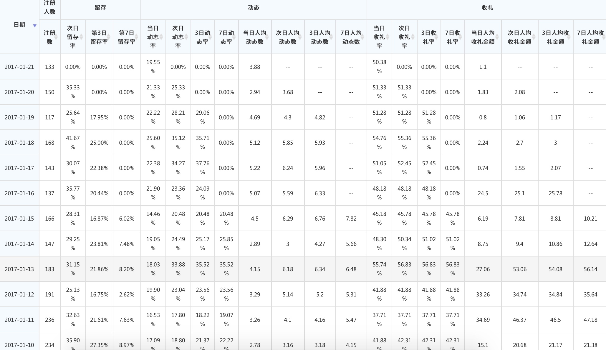

新产品部门锁定在1月底建立自然女生态循环初步转起来的目标，并以生态为基础，输出以富媒体内容和活跃行为服务于男性用户的节奏来展开具体工作。
业务规划
17年新产品的工作主要为围绕以下的里程碑来建立，并同步建立起与业务配套的新产品组织。
- 2017年 1月15日 自然女用户生态循环初步建立。
- 4月15日，K值（包括女用户运营成本）追平多名称K值
- 6月30日，K值（包括女用户运营成本）超过多名称 30%
- 6月30日，iOS平台产品，K值追平多名称iOS版
- 9月30日，围绕新产品形态的另1款新产品上线，同时K值追平多名称
产品&运营
产品的基础功能已经完全搭建完成，围绕女用户循环在做进一步的调优工作，争取在1月底前完成对女用户生态的基本控制，并形成相应的用户运营组织和流程，为期在下一步产出足够的富媒体动态和活跃行为做好准备；对于B类用户的引导教育机制已经完成，春节期间会持续开展B类用户的收集工作。
2月将工作重心转移到男用户交友预期的提升上（这块的产品基建工作也基本完成，但关键性付费流程还没有进行调整，等初步的头部用户积累到一定的量级，就会进行业务流程的修改）。本周已经完成商业化框架，男用户交互流程已经完全定义出来，根据这个定义可以更加明确产品基础体验，用户运营和内容运营的目标。
产品运营的组织和流程基本已经搭建好，涉及到话题运营、审核、提现及初步的反作弊部分，占潮的团队针对女用户的内容运营已经初见成效；占潮的个人意愿还是倾向到前端，正在着手这个团队如何继续运转。
产品团队基于产品体验的打磨也建立了相应的机制，确保产品的各个体验模块能够坚持打磨下去，逐步提升产品力。 新UI的设计工作已经完成，争取在2月能使产品逼格同产品的地位相匹配。文涛已经确认负责约会吧项目，男用户体验暂由安庆接手。
iOS技术团队在人员匮乏的情况下，通过海涛的管理，希望在2月底就能追上AD产品的进度，目前内测版已经发布。
数据情况
自然女用户数据情况（留存，动态和送礼）基于稳定，春节由于渠道原因，目前量级正在减少。

组织发展
组织结构初步建立。

- 团队已经逐步建立起 逻辑层、产品、内容运营、用户运营、多平台 同步运转的机制，以应对逐渐复杂的组织目标。
- 同财务确认17年上半年的预算，张达对于新产品这边的支持力度很大，同时新产品也逐步适应在预算框架之内进行业务的开展，以配合公司的战略部署；
- BP刘博在这段时间内对我的帮助很大，且逐步树立了自己在新产品部门组织发展的老大地位，协助部门将团队士气、沟通机制、激励政策、人员发展等事宜逐步开展起来。
- 文涛已经确认春节后调至约会吧项目，其工作会安排赵安庆接手；
- 马占潮个人意愿还是在前端渠道，这块也在安排团队后续工作。